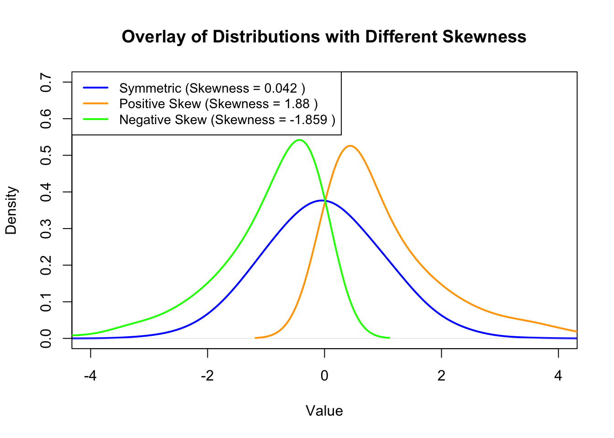

Describing the shape of distribution
1 Background
- The shape of a distribution can be described in terms of the direction and degree of asymmetry, measured by skewness, and the heaviness of the tails, measured by kurtosis.
2 Skewness
It is a measure of the direction and degree of asymmetry of a distribution.
It is described as the standardized third moment \((m_3)\) of the distribution about the mean (the concept of moments will be discussed in upcoming articles).
2.1 Formula
There are three formulas to calculate skewness (we will use sample moments):
Raw formula \(g_1\):
\[ g_1 = \displaystyle \frac{m_3}{m_2^{3/2}} \]
\(m_3\) is the third moment about the mean:
\[ m_3 = \displaystyle \frac{1}{n} \sum_{i=1}^{n} (x_i - \bar{x})^3 \]
\(m_2\) is the second moment about the mean:
\[ m_2 = \displaystyle \frac{1}{n} \sum_{i=1}^{n} (x_i - \bar{x})^2 \]
It is not biased-corrected for small samples.
This formula is used by
Excel(SKEW.Pfunction).
Fisher’s \(G_1\):
\[ G_1 = g_1 \displaystyle \frac{\sqrt {n(n-1)}}{n-2} \]
This measure of skewness is bias-corrected for small samples.
As \(n\) increases, the correction factor becomes closer to \(1\).
This formula is used by
SAS,SPSS,NCSS,Excel(SKEWfunction), andGraphpad Prism.
Skewness \(b_1\):
\[ b_1 = \displaystyle \frac{m_3}{s^3} = g_1 \big (\displaystyle \frac{n-1}{n} \big)^{3/2} \]
\(s\) is the sample standard deviation \(\big [s = \displaystyle \frac{1}{n-1} \sum_{i=1}^{n} (x_i - \bar{x})^2 \big ]\).
This formula is used by
Minitab.This measure uses a slight adjustment by including the factor \((\displaystyle \frac{n-1}{n})^{3/2}\).
The standard error of skewness is given by:
\[ SE_{skewness} = \sqrt \frac{6n(n-1)}{(n-2)(n+1)(n+3)} \]
2.2 Interpretation
A skewness value of zero indicates a symmetrical distribution (mean and median are equal or approximately equal).
A positive value indicates a long right tail (right-skewed distribution, the mean is greater than the median).
A negative value indicates a long left tail (left-skewed distribution, the mean is less than the median).
Further interpretation will be discussed in detail under assessing the normality of data.
The following figure shows different distributions and their skewness values:
2.3 Calculation in R
Different functions in R can be used to calculate the skewness:
skewness()function from themomentspackage (uses formula 1).Skewness()function from thesasLMpackage (uses formula 2).skew()function from thepsychpackage orskewness()function from thee1071package can calculate skewness using the three formulas by setting thetypeargument to either \(1\), \(2\), or \(3\).
The skewness standard error can be calculated using the
SkewnessSE()function from thesasLMpackage.For example, the skewness of the
insulinvariable from thePimaIndiansDiabetesdataset can be calculated as follows:First, let’s plot the density of the
insulinvariable:Click to show/hide code
# load the library and dataset library(mlbench) data(PimaIndiansDiabetes) # plot density of the insulin variable plot( density(PimaIndiansDiabetes$insulin, adjust =2), main = "Density plot of insulin", lwd = 2, col = "#0466c8", )Click to show/hide code
# calculate skewness and its standard error library(psych) library(sasLM) paste( "Skewness =", round(skew(PimaIndiansDiabetes$insulin, type = 2), 3) )[1] "Skewness = 2.272"Click to show/hide code
paste( "Skewness SE =", round(SkewnessSE(PimaIndiansDiabetes$insulin), 3) )[1] "Skewness SE = 0.088"
These results are similar to the results obtained by
SPSSorGraphpad Prism:
3 Kurtosis
It is a measure of tail heaviness (tailedness) of a distribution.
It is described as the standardized fourth moment \((m_4)\) of the distribution about the mean.
Kurtosis is not a measure of peakedness!
- There is a misconception that kurtosis measures the peakedness, but actually its interpretation is in terms of tail extremity (Westfall 2014).
3.1 Formula
There are three formulas to calculate excess kurtosis (we will use sample moments):
Raw formula \(g_2\):
\[ g_2 = \displaystyle \frac{m_4}{m_2^2} - 3 \]
\(m_4\) is the fourth moment about the mean:
\[ m_4 = \displaystyle \frac{1}{n} \sum_{i=1}^{n} (x_i - \bar{x})^4 \]
\(m_2\) is the second moment about the mean:
\[ m_2 = \displaystyle \frac{1}{n} \sum_{i=1}^{n} (x_i - \bar{x})^2 \]
Fisher’s \(G_2\):
\[ G_2 = \displaystyle \frac{(n + 1)g_2 + 6}{(n - 2)(n - 3)} \]
- This formula is used by
SAS,SPSS,NCSS,Excel(KURTfunction), andGraphpad Prism.
- This formula is used by
Kurtosis \(b_2\):
\[ b_1 = \displaystyle \frac{m_4}{s^4} = (g_2 +3)(1 - \displaystyle \frac{1}{n})^2 - 3 \]
\(s\) is the sample standard deviation \(\big [s = \displaystyle \frac{1}{n-1} \sum_{i=1}^{n} (x_i - \bar{x})^2 \big ]\).
This formula is used by
Minitab.
The standard error of kurtosis is given by:
\[ SE_{kurtosis} = \sqrt \frac{24n(n-1)^2}{(n-3)(n-2)(n+3)(n+5)} \]
3.2 Interpretation
Normal distribution is usually used as a reference, which has a kurtosis of \(3\) and is referred to as
mesokurtic.Unimodal distributions with kurtosis \(\gt 3\) possess heavier or thicker tails (i.e., more extreme values in the tails) relative to the normal distribution and are referred to as
leptokurtic.Unimodal distributions with kurtosis \(\lt 3\) possess lighter or thinner tails relative to the normal distribution and are referred to as
platykurtic.The following figure shows different distributions and their kurtosis values:
As depicted in the above figure, the mesokuotic distribution is a normal distribution that has a kurtosis of \(0\) because software packages express it as excess kurtosis \((Kurtosis - 3)\).
In this context, the leptokurtic distribution has a kurtosis \(\gt 0\), while the platykurtic distribution has a kurtosis \(\lt 0\).
3.3 Calculation in R
Different functions in R can be used to calculate the kurtosis:
kurtosis()function from themomentspackage (uses formula 1 but as raw kurtosis, i.e., \(m_4/m^2\)).Kurtosis()function from thesasLMpackage (uses formula 2).kurtosi()function from thepsychpackage orkurtosis()function from thee1071package can calculate skewness using the three formulas by setting thetypeargument to either \(1\), \(2\), or \(3\).
The skewness standard error can be calculated using the
KurtosisSE()function from thesasLMpackage.For example, the skewness of the
insulinvariable from thePimaIndiansDiabetesdataset can be calculated as follows:Click to show/hide code
# load the library and dataset library(mlbench) data(PimaIndiansDiabetes) # calculate kurtosis and its standard error library(psych) library(sasLM) paste( "Kurtosis =", round(kurtosi(PimaIndiansDiabetes$insulin, type = 2), 3) )[1] "Kurtosis = 7.214"Click to show/hide code
paste( "Kurtosis SE =", round(KurtosisSE(PimaIndiansDiabetes$insulin), 3) )[1] "Kurtosis SE = 0.176"These results are similar to the results obtained by
SPSSorGraphpad Prism:
4 References
Daniel, W. W. and Cross, C. L. (2013). Biostatistics: A Foundation for Analysis in the Health Sciences, Tenth edition. Wiley
Heumann, C., Schomaker, M., and Shalabh (2022). Introduction to Statistics and Data Analysis: With Exercises, Solutions and Applications in R. Springer
Hoffman, J. (2019). Basic Biostatistics for Medical and Biomedical Practitioners, Second Edition. Academic Press
Lane, D. M. et al., (2019). Introduction to Statistics. Online Edition. Retrieved September 14, 2024, from https://openstax.org/details/introduction-statistics
Westfall, Peter H. 2014. Kurtosis as Peakedness, 1905–2014. R.I.P. The American Statistician 68 (3): 191–95. https://doi.org/10.1080/00031305.2014.917055